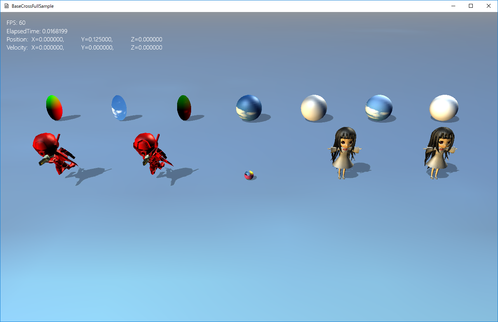
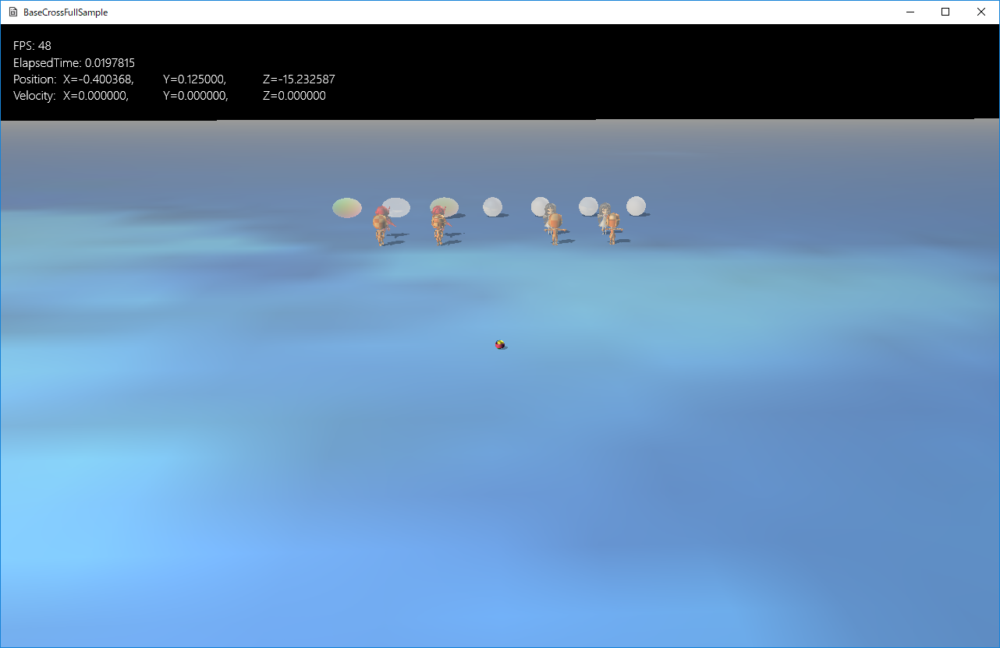
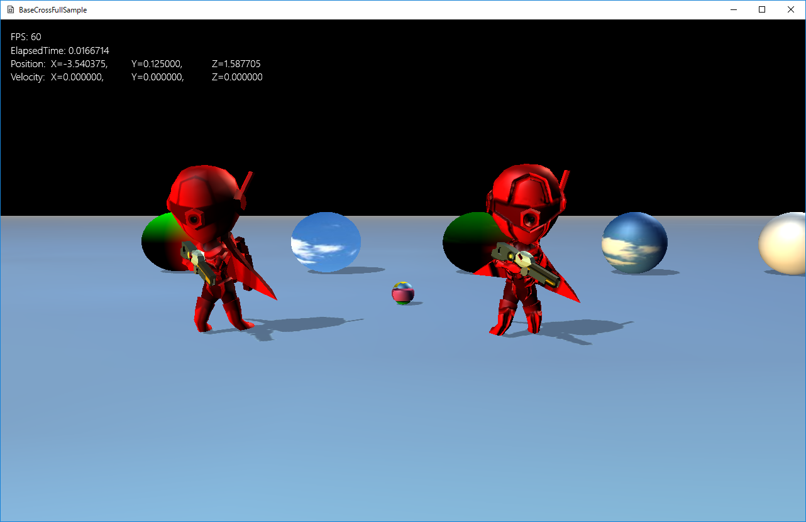

図0404a
前項のサンプルとほぼ同じですが、シェーダが違います。リアルなライティングやフォグが施されています。
void PtSphere::OnCreate() {
//中略
//描画コンポーネント
auto PtrDraw = AddComponent<BcPTStaticDraw>();
PtrDraw->SetFogEnabled(true);
//中略
}

図0404b

図0404c
//初期化
void StaticChara::OnCreate() {
//中略
if (m_TamgentUse) {
auto PtrDraw = AddComponent<BcPNTnTStaticModelDraw>();
PtrDraw->SetFogEnabled(true);
PtrDraw->SetMeshResource(L"MODEL_MESH_WITH_TAN");
PtrDraw->SetNormalMapTextureResource(L"MODEL_NORMAL_TX");
PtrDraw->SetMeshToTransformMatrix(SpanMat);
}
else {
auto PtrDraw = AddComponent<BcPNTStaticModelDraw>();
PtrDraw->SetFogEnabled(true);
PtrDraw->SetMeshResource(L"MODEL_MESH");
PtrDraw->SetMeshToTransformMatrix(SpanMat);
}
}
//初期化
void BoneChara::OnCreate() {
//中略
if (m_TamgentUse) {
//描画コンポーネントの設定
auto PtrDraw = AddComponent<BcPNTnTBoneModelDraw>();
PtrDraw->SetFogEnabled(true);
//描画するメッシュを設定
PtrDraw->SetMeshResource(L"Chara_R_MESH_WITH_TAN");
PtrDraw->SetNormalMapTextureResource(L"Chara_R_NORMAL_TX");
PtrDraw->SetMeshToTransformMatrix(SpanMat);
PtrDraw->AddAnimation(L"Default", 0, 100, true, 20.0f);
PtrDraw->ChangeCurrentAnimation(L"Default");
}
else {
//描画コンポーネントの設定
auto PtrDraw = AddComponent<BcPNTBoneModelDraw>();
PtrDraw->SetFogEnabled(true);
//描画するメッシュを設定
PtrDraw->SetMeshResource(L"Chara_R_MESH");
PtrDraw->SetMeshToTransformMatrix(SpanMat);
PtrDraw->AddAnimation(L"Default", 0, 100, true, 20.0f);
PtrDraw->ChangeCurrentAnimation(L"Default");
}
//透明処理
SetAlphaActive(true);
}
void Scene::CreateResourses() {
//中略
//ボーンモデルの通常リソース
auto ModelMesh = MeshResource::CreateBoneModelMesh(DataDir, L"Chara_R.bmf");
App::GetApp()->RegisterResource(L"Chara_R_MESH", ModelMesh);
//ボーンモデルのタンジェント付きリソース
ModelMesh = MeshResource::CreateBoneModelMeshWithTangent(DataDir, L"Chara_R.bmf");
App::GetApp()->RegisterResource(L"Chara_R_MESH_WITH_TAN", ModelMesh);
//法線マップ
strTexture = DataDir + L"Chara_R_narmal.png";
App::GetApp()->RegisterTexture(L"Chara_R_NORMAL_TX", strTexture);
//ボーンモデル(マルチメッシュ)の通常リソース
auto MultiModelMesh
= MultiMeshResource::CreateBoneModelMultiMesh(DataDir, L"Object_WalkAnimation.bmf");
App::GetApp()->RegisterResource(L"Object_WalkAnimation_MESH", MultiModelMesh);
//ボーンモデル(マルチメッシュ)のタンジェント付きリソース
MultiModelMesh
= MultiMeshResource::CreateBoneModelMultiMeshWithTangent(DataDir, L"Object_WalkAnimation.bmf");
App::GetApp()->RegisterResource(L"Object_WalkAnimation_MESH_WITH_TAN", MultiModelMesh);
//法線マップ
strTexture = DataDir + L"Tx_Checker_Normal.png";
App::GetApp()->RegisterTexture(L"OBJECT_NORMAL_TX", strTexture);
//スタティックモデルの通常リソース
auto StaticModelMesh = MeshResource::CreateStaticModelMesh(DataDir, L"Character_01.bmf");
App::GetApp()->RegisterResource(L"MODEL_MESH", StaticModelMesh);
//スタティックモデルのタンジェント付きリソース
StaticModelMesh = MeshResource::CreateStaticModelMeshWithTangent(DataDir, L"Character_01.bmf");
App::GetApp()->RegisterResource(L"MODEL_MESH_WITH_TAN", StaticModelMesh);
//法線マップ
strTexture = DataDir + L"Character_2_normal.png";
App::GetApp()->RegisterTexture(L"MODEL_NORMAL_TX", strTexture);
//スタティックモデル(マルチメッシュ)の通常リソース
auto StaticMultiModelMesh
= MultiMeshResource::CreateStaticModelMultiMesh(DataDir, L"ObjectOnly.bmf");
App::GetApp()->RegisterResource(L"ObjectOnly_MESH", StaticMultiModelMesh);
//スタティックモデル(マルチメッシュ)のタンジェント付きリソース
StaticMultiModelMesh
= MultiMeshResource::CreateStaticModelMultiMeshWithTangent(DataDir, L"ObjectOnly.bmf");
App::GetApp()->RegisterResource(L"ObjectOnly_MESH_WITH_TAN", StaticMultiModelMesh);
}